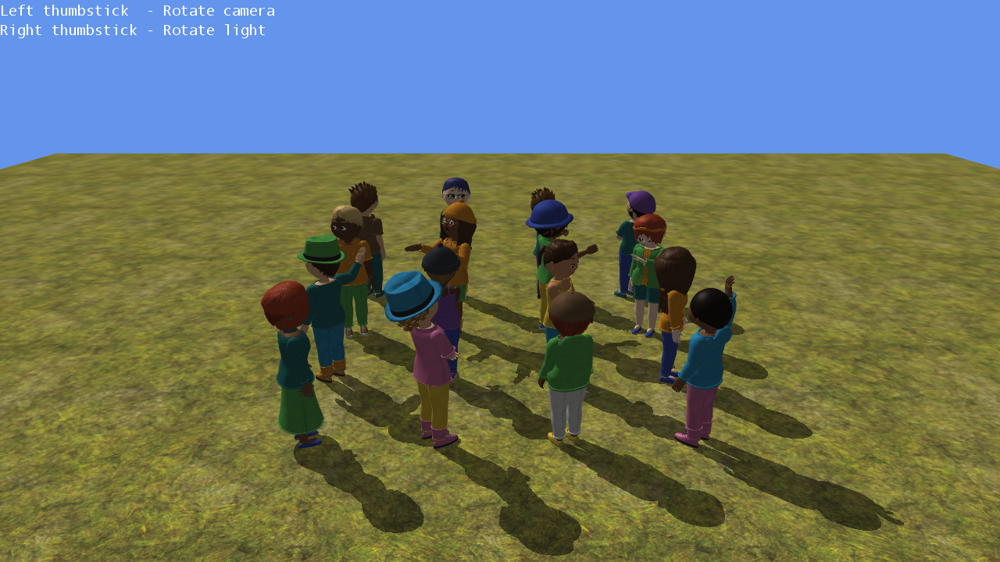

Avatar Shadows
Ported from Microsoft's XNA 4.0 Avatar Shadows Sample for Xbox 360.
Source for this sample on GitHub ↗

Play ▸Opens in a new tab. Click the game canvas to focus the keyboard. CNA supplies its own avatars and preset motions; their appearance and timing differ from Xbox avatars. The original requests an Alpha8 shadow target; CNA uses its general preferred-format fallback to Color while preserving the visible alpha-mask result. Keyboard emulation is enabled alongside gamepad input. Documented differences ↗
About this sample
This sample places 16 independently animated avatars on textured ground. Each avatar receives a random appearance, animation preset and world rotation.
It uses Matrix.CreateShadow to flatten the avatars onto a plane, renders that pass into a full-screen shadow texture, then samples the texture in a custom ground effect to darken shadowed pixels. The avatars are drawn normally in a second pass.
Controls
| Action | Keyboard | Gamepad |
|---|---|---|
| Rotate camera | A / D | Left stick |
| Rotate light | Left / Right arrow | Right stick |
| Stop the sample | Escape | Back |